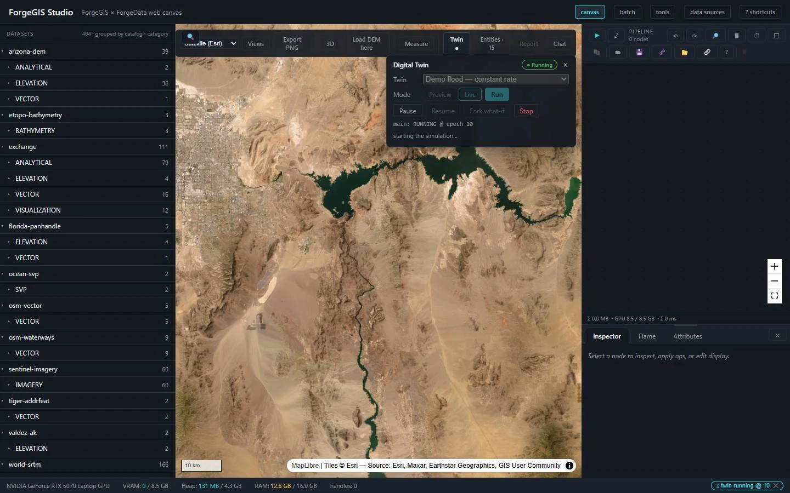
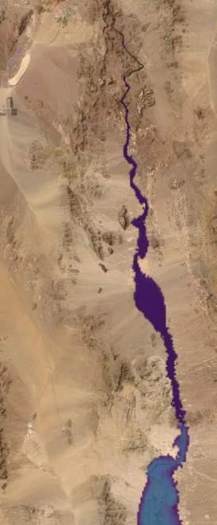
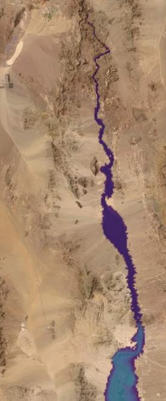
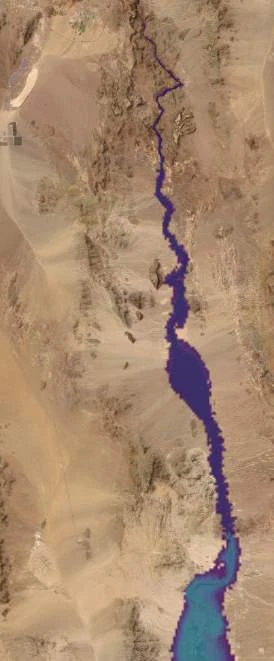
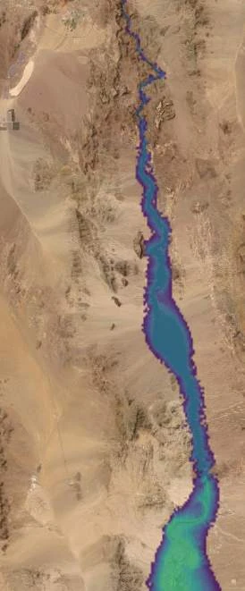
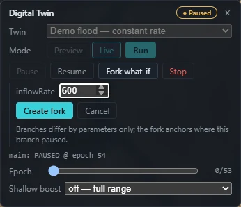
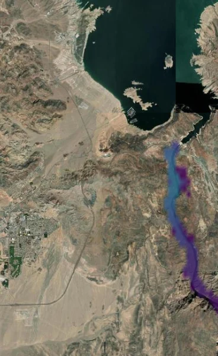
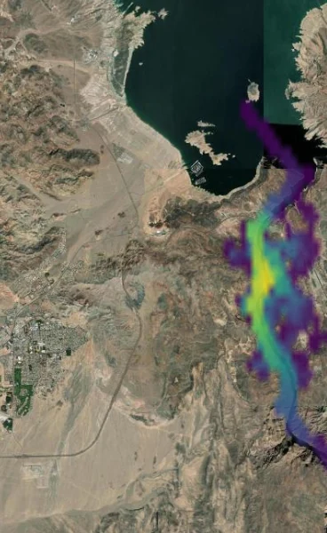
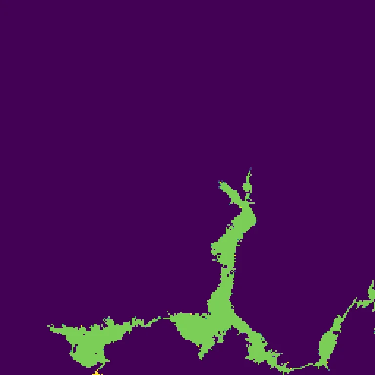
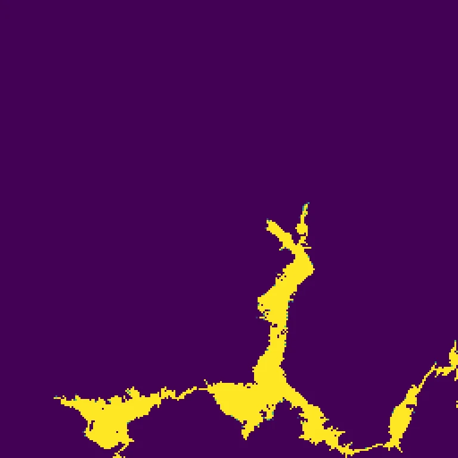

Pause a running flood simulation. Change one decision. Keep both worlds.
A ForgeGIS™ GPU flood simulation over real SRTM terrain — Boulder Basin, the dam site, all of Black Canyon, upper Lake Mohave — runs to epoch 54 and is paused mid-event, then forked in place with no copy of its history. One decision is overridden in the branch: release rate, ten times higher. What comes back is two worlds that share every epoch before the anchor and diverge cleanly after it, with a ledger that conserves water across the split.

Not a rendering, and not a one-shot simulation. A running, inspectable, branchable state.
State lives on the GPU and advances in discrete epochs. The same twin definition and the same terrain produce the same sequence of epochs every time, which is what makes two runs comparable at all — and what lets a branch inherit a history rather than re-simulate one.
A paused run can be forked in place. The branch does not copy the parent's history; it anchors to it. Branches differ by parameters only, so everything the two worlds disagree about after the anchor is attributable to the one value that was overridden.
Every epoch's water is accounted in a single conserved quantity across the whole corridor, so the difference between two worlds is a number you can check against a closed-form prediction rather than a picture you have to trust.
Three runs over two SRTM tiles. Every figure on this page is read back off the recordings, not from a design document — including the ones that are inconvenient.
What the units mean, and where the model stops being literal. Worth two minutes before the charts.
The simpler question first, because it produces the curve every reservoir manager already reads. The level rides a ramp from 200 m to 320 m (656–1,050 ft), baked into the twin’s identity rather than offered as a knob, and at every stage the run asks one question: which cells sit below the line?




Five stages of one ramp, same frame each time. At the lowest stage a thin thread of water follows the channel floor; by the highest it has widened through the gorge and reached into the side drainages, and the depth ramp has climbed from purple through blue into green. Nothing moves between these frames but the line.
The honest tell: by the pause the baseline stands ≈489 km² of water in the valley — against a real Lake Mohave of about 114 km². That gap is the point. The upper stages here are screening geometry, not an operating scenario, and the curve below says so plainly.
Now the terrain spans both source tiles as one corridor mosaic — Boulder Basin, the dam site, all of Black Canyon, upper Lake Mohave — so the story is connected end to end: water leaves the lake, crosses the dam site, and runs the gorge under one conserved ledger.
At epoch 54 the run is paused. The what-if form opens on the paused branch and exposes exactly what is forkable: the promoted parameter. Here that is the release rate, raised ten times. Nothing else is touched — not the terrain, not the clock, not the history.
The branch anchors to the parent rather than duplicating it, so forking a long-running twin costs almost nothing and can be done mid-event, while the operator is still watching. The two worlds share every epoch up to the anchor and nothing after it.
The form states the contract in one line: branches differ by parameters only; the fork anchors where this branch paused.

inflowRate is set to 600 for the branch, and the note under the field states the rule the whole capability rests on.Both frames are the same epoch in the two worlds — same terrain, same imagery, same history up to epoch 54.


Left, the baseline release threads a narrow ribbon south down Black Canyon. Right, the branch at ten times the rate: wider everywhere the baseline reached, further down-canyon, and its core has climbed the depth ramp from blue into green and yellow. The only difference between these two frames is one number, changed once, 32 epochs earlier.
The pictures are persuasive; the ledger is checkable. Water in the gorge, per world, per epoch — the decision as a number.
The branch accumulates at exactly ten times the baseline rate from the anchor on — so the wedge is not an emergent surprise, it is what the closed-form law predicts, and the ledger lands on it. That agreement is the actual claim being made here.
Run the same bathtub over the Lake Mead tile and the method exposes its own input. In February 2000 the SRTM radar mission measured the water surface of a nearly full reservoir — pixel-verified at about 372 m, dead flat, across Boulder Basin. There is no lakebed in that terrain. So a stage ramp from 273 m to 375 m shows almost nothing at all, until it crosses the frozen surface and the whole basin snaps wet in a single step. The cliff measures ≈564 km² against a real full-pool surface of ≈640 km² — the radar’s lake and the model’s cliff are the same object, measured 26 years apart. We keep this in because a method worth trusting is one honest enough to expose quirks in its own inputs.


The dam is the demonstration. These are the properties it is demonstrating.
Because forking is cheap and happens on a paused run, an operator can ask “what if we opened it further?” while the event is still unfolding — not in a post-hoc study run days later.
Branches anchor to a shared history instead of duplicating it, so comparing several courses of action does not multiply the cost of the run that produced them.
One conserved quantity across the corridor means the gap between two worlds is a checkable number. Here it matches the closed-form prediction; where it would not, that is a finding, not a rounding error.
The state grid spans a mosaic built from more than one source tile, so a twin can follow water from a reservoir, across a structure, and down a gorge under a single ledger.
The digital twin is a ForgeGIS engine capability, driven from the ForgeGIS Studio canvas, and is targeted for an upcoming release. It is a stated direction, not a shipping feature — everything shown on this page is a real recording, but it is not yet in your hands.
The full technical showcase carries the validation blocks this page leaves out — definition hashes, run identifiers, wet-cell counts, the fork ordinal, and the recorded API exchanges behind every figure above. Seaglass Foundry™ is happy to walk an evaluator through it.
rich@seaglassfoundry.com